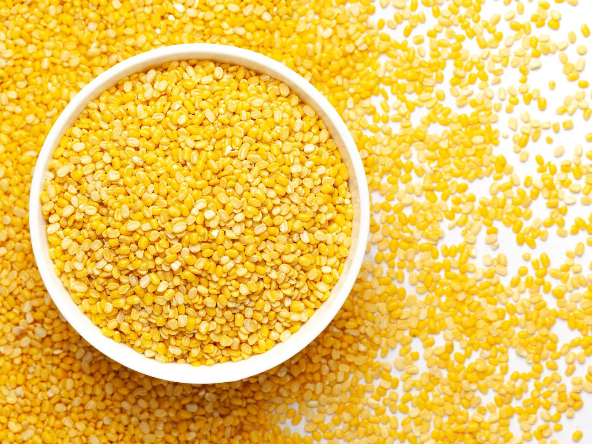

Moong Dal
Moong Dal, the mung bean split, is a cherished ingredient in South Asian kitchens, celebrated for its mild flavor and ease of digestion. High in protein and low in calories, Moong Dal is a healthful choice for all age groups. It cooks quickly and is versatile enough to be used in soups, salads, curries, and even desserts. Our Moong Dal is sourced from the best crops, ensuring that it is free from impurities and ready to be transformed into nutritious and comforting dishes. Whether you are a restaurant, retailer, or distributor, our Moong Dal stands ready to meet your needs with its quality and wholesomeness.
Endless Culinary Inspiration:
Our premium lentils cater to the creative visions of chefs, home cooks, and food enthusiasts alike, offering endless culinary inspiration and possibilities. Whether you seek to craft traditional dishes that pay homage to cultural heritage or innovate with modern interpretations, our lentils serve as the perfect canvas for culinary expression.
Inspiration for Culinary Creativity:
Our premium moong dal serves as a source of inspiration for chefs, home cooks, and culinary enthusiasts seeking to elevate their gastronomic creations. Whether crafting traditional delicacies that honor cultural heritage or exploring innovative culinary concepts, moong dal offers endless possibilities for culinary experimentation and expression.
.png)